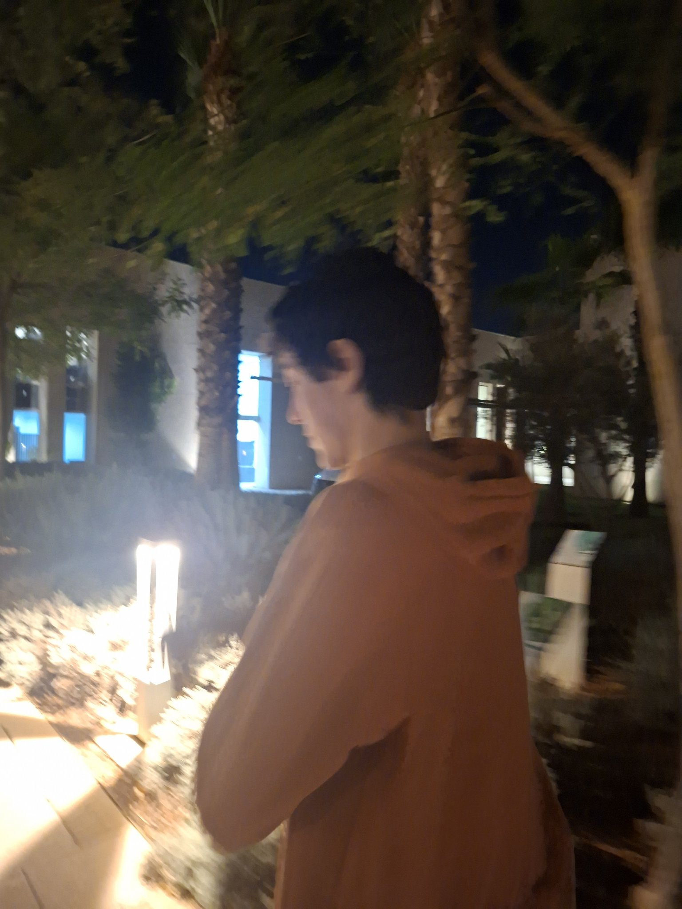

Messi, the reader

Every blog has a reader behind it. This one is Messi's.
Messi was born in Fes, the old city — the medina, the tanneries, the kind of place that stays with you no matter where you go next.
He grew up between Rabat and Temara: the capital on one side, the coast on the other, and the road between them as a daily commute. Two cities, one childhood.
And from time to time, he would go to Oulfa, in Casablanca — the big city's other end, a different rhythm entirely.
Fes, Rabat, Temara, Oulfa. That is the map so far — and the reason this blog exists: to read, to write, and to keep track of what is worth remembering.